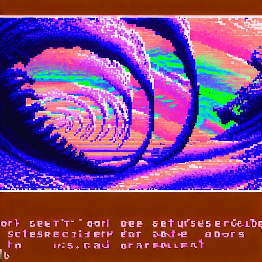
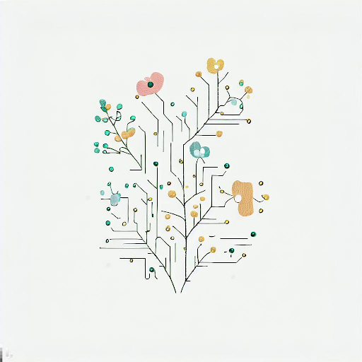
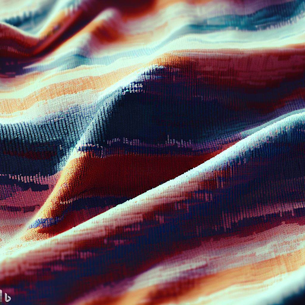
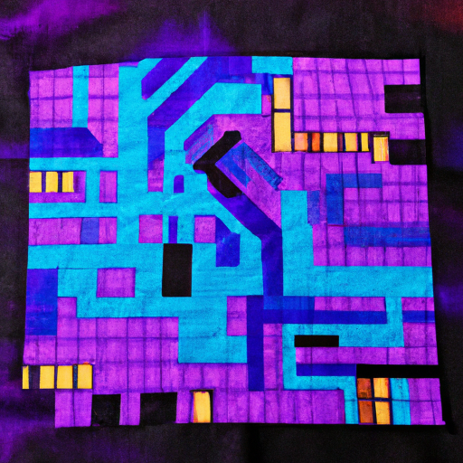
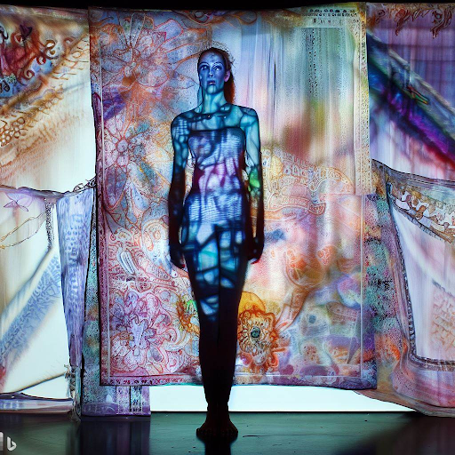
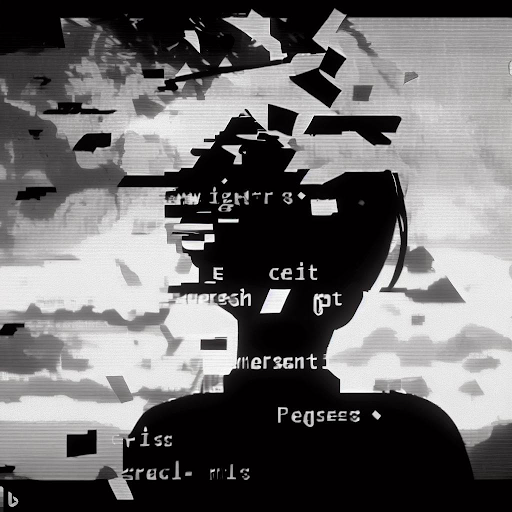
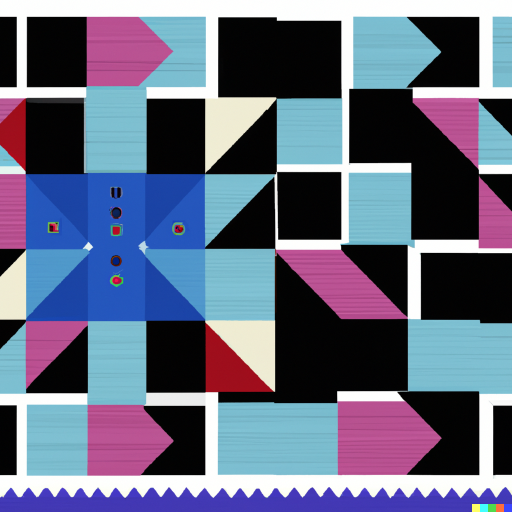
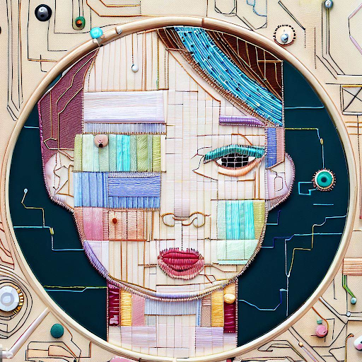
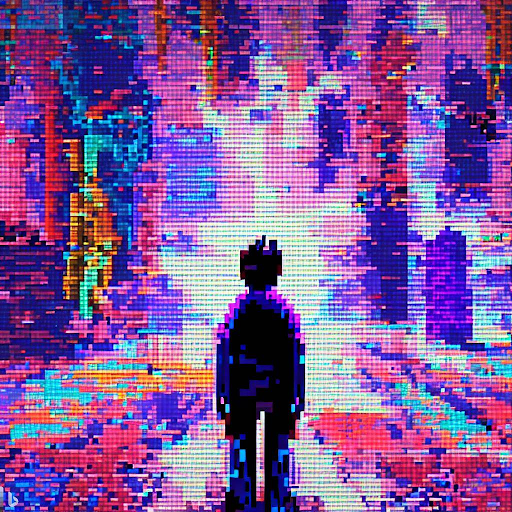
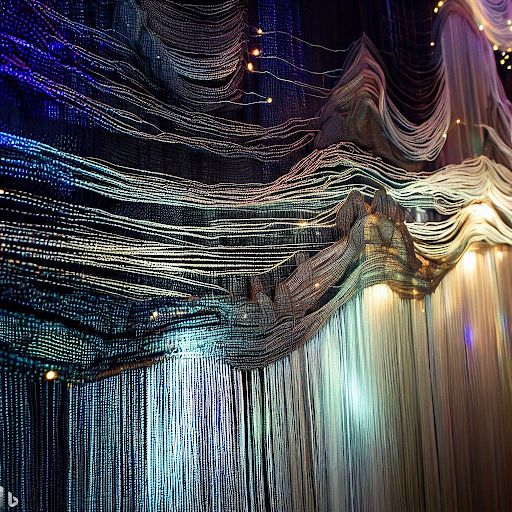

Digital Reverie
PixelGrrl
"Digital Reverie" is a mesmerizing journey into the depths of the subconscious mind. PixelGrrl's surrealistic narrative unfolds through a nonlinear exploration of fragmented thoughts and vivid imagery. The CD-ROM experience immerses the reader in a dreamlike realm, where automatic writing and stream-of-consciousness narration intertwine to create an unsettling and thought-provoking experience. Interactivity plays a crucial role in the work, allowing readers to navigate through different paths and uncover hidden meanings within the text. Through this groundbreaking piece of electronic literature, PixelGrrl pushes the boundaries of storytelling by harnessing the power of digital technology to transport readers into an enigmatic and introspective digital reverie.

Binary Fragments
WovenWords
"Binary Fragments" is a thought-provoking collection of cross-stitch artworks that delve into the intricate relationship between technology and identity. WovenWords' creations are composed solely of delicate cross-stitches, meticulously arranged to form minimalist patterns and symbols. Each piece serves as a visual exploration of the binary nature of technology, inviting viewers to reflect on the complex interplay between digital systems and personal identity. Through the simplicity of cross-stitch, "Binary Fragments" draws attention to the inherent limitations and biases of technology, challenging viewers to question how these systems shape our understanding of gender, sexuality, and the fluidity of identity. WovenWords' mastery of cross-stitching technique harmonizes with the profound content of the works, provoking contemplation and sparking conversations about the multifaceted nature of the digital world.

GlitchWeave
PixelGrrl
"GlitchWeave" seamlessly merges PixelGrrl's expertise in glitch art and textile design, offering a unique exploration of the intersection between digital aesthetics and traditional craftsmanship. This CD-ROM showcases an innovative fusion of code and fabric, where the glitched patterns and textures created by PixelGrrl find new life in woven textiles. Readers can delve into the intricacies of glitched textile art, navigating through a richly interactive experience that reveals the underlying processes of creation. As readers immerse themselves in the world of "GlitchWeave," they witness the collision of digital manipulation and ancient craft, witnessing the birth of a new artistic language that challenges the boundaries of both traditional storytelling and visual art.

Mosaic Resurgence: Stitched Narratives of Strength
TechnoFemme
"Mosaic Resurgence: Stitched Narratives of Strength" is a captivating miniquilt that celebrates the power of minimalistic shapes and subtle tones. Thoughtfully arranged fabric fragments are skillfully stitched together, forming an organic mosaic of shapes and colors. Soft earth tones, warm neutrals, and delicate pastels create a soothing palette that emanates resilience. The textile composition weaves a tapestry of narratives, reflecting stories of strength and self-discovery. "Mosaic Resurgence" invites viewers to embrace the transformative potential found in minimalist forms, encouraging reflection on the beauty of stitched narratives and the harmonious interplay of shape and color.

Fiber Revolt
CyberStitch
"Fiber Revolt" is an audacious textile experiment that rebels against convention, unfurling narratives of resilience and defiance. Suspended with delicate grace, fabric panels serve as intimate portals into the liminal spaces between art and activism. Each textile canvas captures marginalized voices, woven with passion and precision. Textures intertwine, threads hand-dyed in rebellious hues, and stitches tell stories in their own language. Crafted with love and meticulous attention, these tactile creations invite viewers to embrace the experiential. Concealed within the fabric's tender embrace, dormant sensors awaken under the caress of curious fingertips, conjuring an immersive collision of tactile and digital realms. Projected imagery and ethereal videos intertwine with the fabric's fibers, unraveling powerful narratives of resistance and reclaiming. "Fiber Revolt" weaves a provocative tapestry, urging viewers to question dominant narratives and embrace the potential for radical change. This small-scale installation celebrates the raw power of textile art, bridging the boundaries between the tangible and intangible, forging connections that ignite the imagination.

Fragments of Recollection
TextileRebel
"Fragments of Recollection" is an intriguing electronic literature creation by TextileRebel, presented by Eastgate Systems. Immerse yourself in this glitched narrative as you follow the protagonist's journey through a digital realm plagued by memory loss and enigmatic events. As the plot unfolds, fragmented words and distorted images intertwine, reflecting the protagonist's struggle to reconstruct their fractured past. Explore the glitched pages, each revealing a puzzle piece of the protagonist's memories. Uncover secrets, encounter unexpected connections, and navigate hyperlinked pathways that lead to startling revelations. "Fragments of Recollection" weaves a captivating tale of mystery and self-discovery, inviting readers to embrace the uncertainties and complexities of an intricately glitched world.

Interlocking Chroma: Digital Fragments in Motion
TechnoFemme
"Interlocking Chroma: Digital Fragments in Motion" is a captivating miniquilt that explores the interplay of colors and geometric shapes, embodying TechnoFemme's exploration of gender, identity, and technology. Bold lines and intersecting fabric pieces form a dynamic network of shifting digital fragments, pulsating with vibrant hues. Electric blues, radiant pinks, and vivid purples create a sense of technological energy and constant transformation. The minimalistic design invites contemplation, provoking reflection on the ever-evolving digital realm and its impact on human experiences. "Interlocking Chroma" conveys TechnoFemme's creative vision through simple yet striking visual elements, sparking a dialogue on the fluid boundaries of gender and identity.

Textile Reflections
WovenWords
"Textile Reflections" is an evocative series of embroidered artworks that weaves together various textile media to explore the intersections of technology, gender, and identity. WovenWords seamlessly integrates embroidery with mixed textile techniques, incorporating fabric, thread, and other materials into each composition. The pieces in this collection transcend the boundaries of traditional embroidery, incorporating elements of layering, appliqué, and fabric manipulation. Through this diverse range of textile media, "Textile Reflections" offers a multi-dimensional examination of the ways in which technology shapes and challenges our perceptions of gender and identity. WovenWords' creative vision blends intricate embroidery stitches with tactile elements, creating a sensory experience that invites viewers to immerse themselves in the contemplation of digital realms and the intricacies of personal authenticity.

Threads of Destiny: Weaving Rebellion in a Pixelated Landscape
TextileRebel
"Threads of Destiny: Weaving Rebellion in a Pixelated Landscape" is a gripping electronic literature work by TextileRebel, published by Eastgate Systems. Embark on an enthralling narrative where glitch art and hypertext intertwine to depict a protagonist's quest for liberation in a dystopian society. The pixelated visuals mirror the fragmented reality of this pixelated landscape, where rebellion and resistance flourish. Follow the protagonist through dramatic events, as they navigate treacherous pathways, challenge oppressive systems, and forge unexpected alliances. "Threads of Destiny" immerses readers in a world of intrigue, weaving together threads of defiance and courage. Lose yourself in this digital tapestry, where each choice has profound consequences, and the power to reshape the destiny of the protagonist and the world they inhabit.

Code Threads
CyberStitch
"Code Threads" is an intimate and enchanting textile exploration that intertwines physical craft with daring digital experimentation. Delicate and intricate, the installation invites viewers into a world where textiles become conduits for imaginative journeys. The fabric's surfaces are adorned with a vibrant tapestry of threads, meticulously intertwined with gleaming metallic fibers and unconventional embroidery. Embedded within the tactile landscape, concealed circuits hum with electric energy, merging the materiality of fibers with the ethereal realm of digital creation. Visitors are beckoned to engage with the fabric's tangible poetry, their touch guided by conductive thread as they inscribe intimate patterns and cryptic code. In response, the fabric comes alive, illuminating with an ethereal dance of pulsating light and ethereal whispers. "Code Threads" whispers its secrets, inviting participants to embrace the synergy between textile artistry and the transformative possibilities of digital ingenuity. This intimate installation unveils the intimate marriage of craft and code, inviting contemplation of technology's impact on our creative narratives.